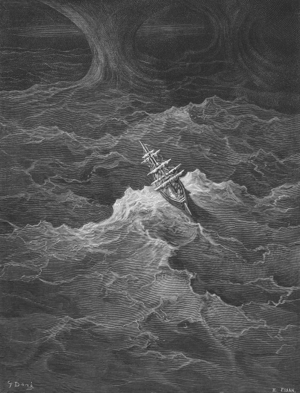
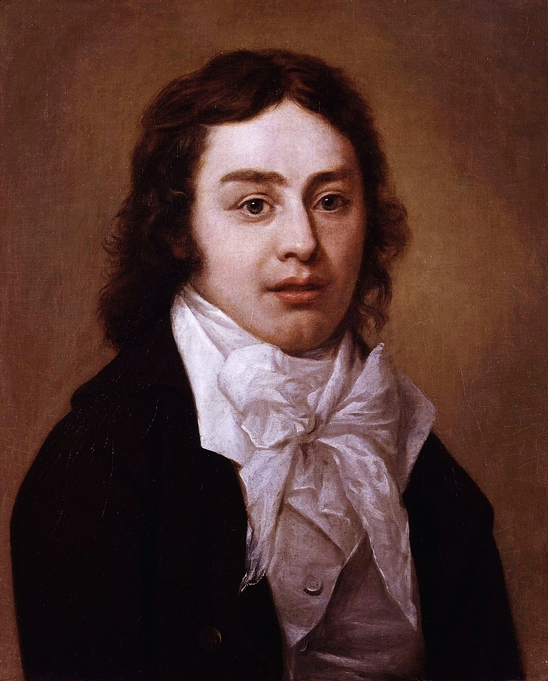

Excerpt of 'The Rime of the Ancient Mariner' (1797)
One after one, by the star-dogged Moon,
Too quick for groan or sigh,
Each turned his face with a ghastly pang,
And cursed me with his eye.
Four times fifty living men,
(And I heard nor sigh nor groan)
With heavy thump, a lifeless lump,
They dropped down one by one.
(Text excerpt from Part III)
Author Biography
Samuel Taylor Coleridge (21 October 1772 – 25 July 1834) was an English poet, literary critic, philosopher and theologian who, with his friend William Wordsworth, was a founder of the Romantic Movement in England and a member of the Lake Poets. He also shared volumes and collaborated with Charles Lamb, Robert Southey, and Charles Lloyd.
He wrote the poems The Rime of the Ancient Mariner and Kubla Khan, as well as the major prose work Biographia Literaria. His critical work, especially on William Shakespeare, was highly influential, and he helped introduce German idealist philosophy to English-speaking culture.
Coleridge coined many familiar words and phrases, including suspension of disbelief. He had a major influence on Ralph Waldo Emerson and American transcendentalism.
Throughout his adult life Coleridge had crippling bouts of anxiety and depression; it has been speculated that he had bipolar disorder, which had not been defined during his lifetime. He was physically unhealthy, which may have stemmed from a bout of rheumatic fever and other childhood illnesses. He was treated for these conditions with laudanum, which fostered a lifelong opium addiction.
(Biographic text borrowed from the poet's Wikipedia page).